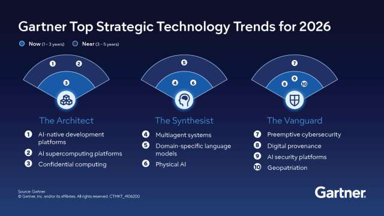
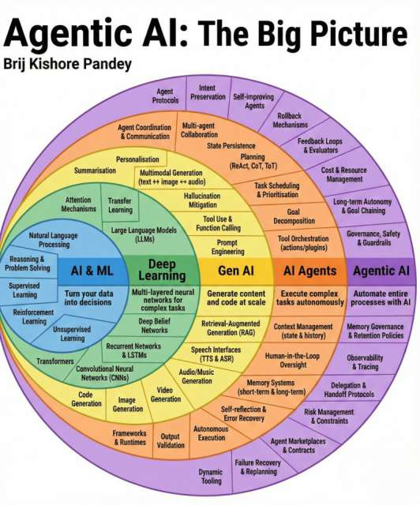
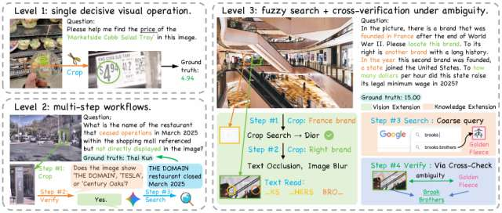

Что такое «ИИ-перспектива»?
В 2026 году искусственный интеллект окончательно перестал быть узкой технологией и превратился в фундаментальный слой глобальной цифровой инфраструктуры. «ИИ-перспектива» — это не просто прогноз, а осознание того, что ИИ становится базовым драйвером научного прогресса, экономических процессов и даже нашего повседневного взаимодействия с информацией.

Чем ИИ является сейчас?
Технологический взгляд сегодня требует чёткого понимания того, что такое современный ИИ. Это не «разум» и не «сознание», как часто представляют в массовой культуре. В своей основе любой ИИ, сколь бы сложным он ни был, остаётся мощной системой распознавания статистических паттернов и предсказания последовательностей. Проще говоря, это не генератор идей, а сложнейшая «машина вероятностей», которая на основе обученных связей предсказывает наиболее вероятное продолжение вашего запроса. Однако именно эта способность, дополненная автономией, и порождает революцию.
Ключевое понятие 2026 года — агентный ИИ (Agentic AI). В отличие от старых чат-ботов, отвечающих только на прямые вопросы, современные ИИ-агенты способны самостоятельно планировать, выполнять и корректировать длинные последовательности действий для достижения сложных целей. Они могут взаимодействовать с интерфейсами, управлять инструментами и даже корректировать собственные ошибки. Кроме того, ведущие системы стали мультимодальными — они обрабатывают текст, изображения, аудио и видео в едином рабочем потоке, что кардинально расширяет сферы их применения.

Развитие ИИ
Технологические лидеры задают ориентиры на ближайшие годы. Google DeepMind прогнозирует достижение общего искусственного интеллекта (AGI) в горизонте пяти-восьми лет, называя «непрерывное обучение» главным отсутствующим компонентом текущих архитектур. Gartner выделяет мультиагентные системы и ИИ-суперкомпьютинговые платформы в числе десяти ключевых стратегических технологических трендов 2026 года. NVIDIA расширяет линейки открытых моделей для агентного, физического и медицинского ИИ. Академические исследования, например, публикации на arXiv, уже фиксируют, что современные агенты способны выполнять 22 из 32 шагов при моделировании сложных кибератак (при этом человеческому эксперту на полную атаку потребовалось бы 14 часов), а также самостоятельно находить уязвимости нулевого дня. При этом наиболее сложные задачи мультимодального агентирования (3-й уровень) пока решаются с точностью лишь около 23%.

Описание уровней задач мультимодальных LLM. 1 уровень — 1 визуальная операция (нахождение цены салата). 2 уровень – многошаговый рабочий процесс (Нахождение имени ресторана, закрытого в марте 25 года, располагающегося в ТЦ, не прямо показанном на картинке). 3 уровень – нечёткий поиск и верификация под неопределённостью (На картинке есть основанный во Франции после второй мировой войны бренд. Справа от него другой бренд с долгой историей. В году основания второго бренда в состав США вошёл стат. На сколько долларов в час выросла минимальная зарплата в этом штате в 25 году?). Картинка с arXiv.
ИИ-перспектива — это не научная фантастика, а живая, бурно развивающаяся инженерия, которая прямо сейчас переопределяет границы возможного: от автоматизации рутины до ускорения научных открытий в биологии, физике и медицине.